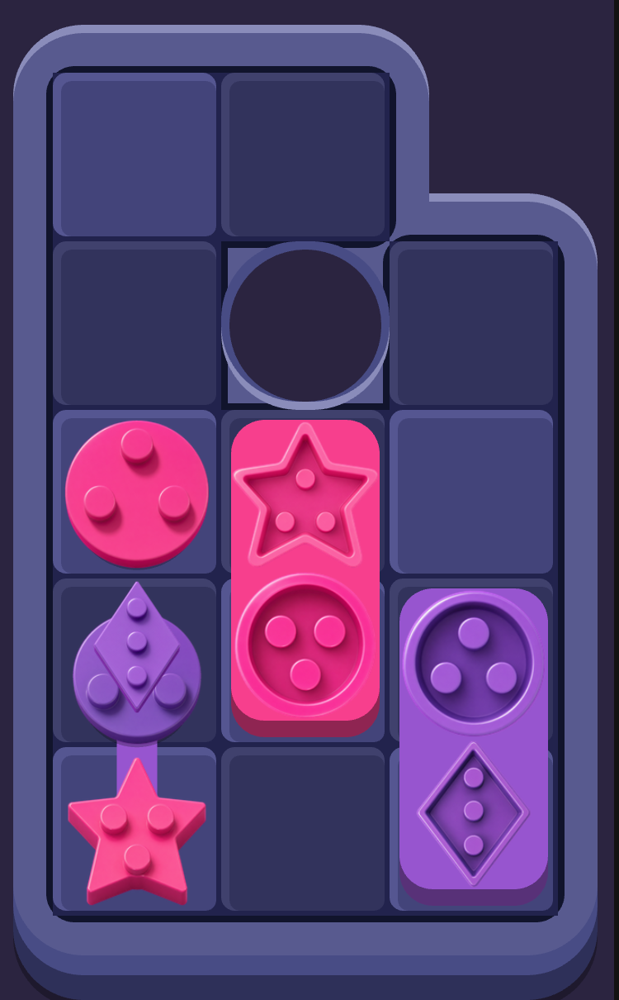
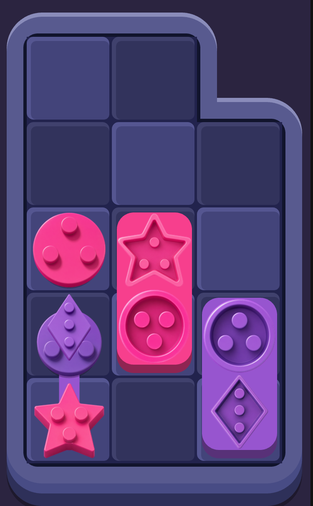
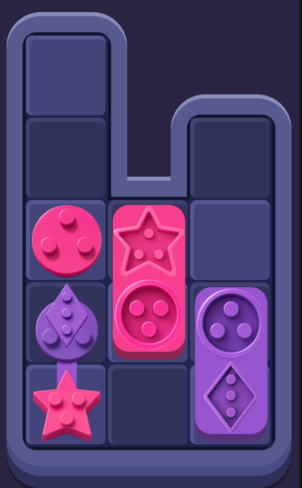

Vấn đề không nằm ở nét vẽ mà ở hình board. Một ô khoét bị các ô chơi
được vây kín bốn phía thì đường bao của nó bắt buộc là một đường thứ hai, tách rời đường bao
ngoài — vẽ tròn, vẽ vuông, vẽ bo kiểu gì cũng vẫn là "một hình dán vào giữa". Muốn tường là
một nét liền thì chỗ khoét phải thông ra ngoài, hoặc đừng khoét.
Cả 50 màn chỉ có 5 màn dính lỗi này: Lv8, Lv13, Lv33, Lv36, Lv38. Bốn ảnh
dưới render thẳng từ game thật — cùng màn, chỉ khác cách xử.
A · Hiện tại — LỖ TRÒNÔ kín bị khoét thành hình tròn. Biên của nó là một đường RIÊNG, không dính vào đường bao ngoài — đúng chỗ bạn chê. Hình học không cho phép khác: một lỗ bị vây kín thì luôn là một nét thứ hai.

B · LẤP ô kínÔ đó thành ô chơi được. Board liền một khối ⇒ chỉ còn ĐÚNG MỘT đường bao. Đổi lại board rộng thêm một ô, màn dễ đi một chút.

C · KHOÉT THÔNG ra mép — VỊNHKhoét thêm ô nối ra tận mép. Tường chạy từ ngoài, lượn vào trong, vòng quanh vịnh rồi lượn ra — MỘT NÉT LIỀN từ ngoài vào trong. Board hụt một ô ⇒ chật hơn, khó hơn.

D · Lv13 sau khi LẤPMàn 13 không có lối khoét thông nào (bốn phía ô kín đều là khay/chốt), nên chỉ LẤP được. Bờ tường vẫn một nét, lượn ra lượn vào theo hình board.